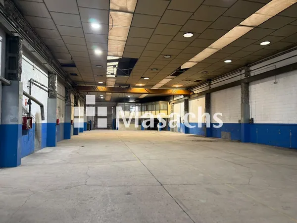
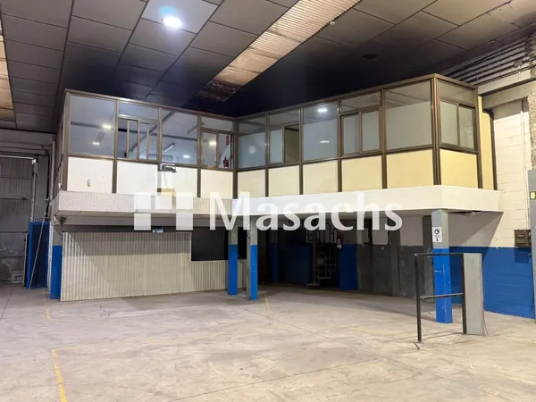
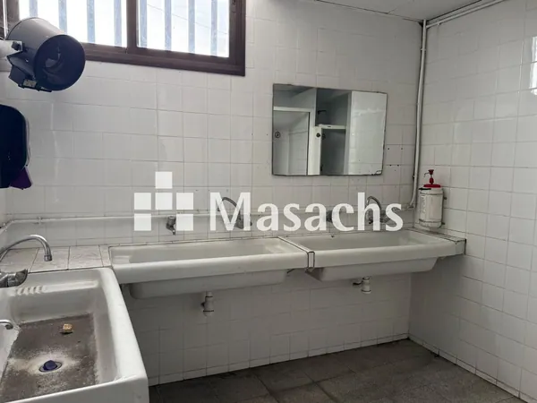

Plano · tocar un número de la lista lo marca acá
Letras: condiciones go/no-go · o: obra necesaria · números: lo que hay que medir o confirmar · c: lo que el chequeo de circulación marca hoy · trazos: el área o la franja de la cota · la línea azul: el largo libre a lo largo de la pista · ejes x/z: el origen de las cotas.
Condiciones go/no-go · si alguna sale mal, la nave se cae o hay que rehacer el layout
- Se decide en la visitaDecide: ≥ 5,7 m libres bajo jácenas, cerchas, luminarias e instalaciones en la vertical de la plataforma: plataforma a 2,9 m + 2,4 m del rider + 0,4 m de instalaciones (PROGRAMA §1). Si da menos, se baja la plataforma (a lo medido − 2,8 m), nunca el run-out.Altura libre medida con láser sobre la plataforma (m):
8 notas del layout
fuente de la cota: foto G2 (testero posterior: suelo→falso techo 159 px con zócalo de 1,4 m = 39 px y ancho 410 px = 14,6 m → 5,6–5,8 m), G4/G5 (falso techo a 1,2 × la altura del portón TIR de ≈4,0 × 4,7 m → 5,7–5,8 m). El anuncio publica 6,5 m, que no se ve bajo el falso techo: se toma la menor (PROGRAMA §4)
riesgo: Mini gym en el altillo (29,7 m² sobre el vestuario F). Solo se llega por la escalera de caracol existente, que no vale como escalera de uso general ni como recorrido accesible, y no hay ascensor. Obra necesaria para abrirlo a clientes (decisión de negocio, también en docs/TRANSITABILIDAD.md): una escalera nueva de 1,20 m útiles (PROGRAMA §3; huellas ≥ 0,28 y contrahuellas ≤ 0,175) y una plataforma elevadora (accesibilidad, Decret 209/2023 y CTE DB-SUA 9), porque la de caracol deja ≈0,6 m útiles (`usableWidth`; walk lo mide así: `corridor zone:gym`, 0,60 m); si no, queda para sesiones guiadas con monitor o para el staff, como pieza de uso restringido. La altura libre de las oficinas existentes es de ≈2,8–2,9 m (el vidrio llega al falso techo, match3; antes se suponían 2,2–2,3 m), por confirmar en la visita: hasta entonces, sin rack ni saltos al cajón, solo mancuernas, banco, step-ups bajos, core y equilibrio. El forjado de oficinas suele calcularse para 2–3 kN/m² y un gimnasio pide 5 kN/m² (CTE DB-SE-AE): que lo compruebe un técnico, y aislar el ruido y los golpes hacia el vestuario F. Si nada de eso se puede, la alternativa es dejar una sola cama elástica (8,2 × 6,05 m) y meter un gym de ≈25 m² en planta baja.
riesgo: Altura: la plataforma está justo en el límite con 5,7 m de falso techo medidos en fotos. Los 6,5 m del anuncio no se ven. Medir el falso techo, los downlights y las placas que faltan; si queda por debajo de 5,7 m, bajar la plataforma (2,7 m con rampa de 6,8 m).
riesgo: Altillo con altura y forma estimadas: bajo el forjado quedan ≈2,1–2,3 m, menos de los 2,5 m de PROGRAMA §4. Los vestuarios y el aseo adaptado van donde ya están los aseos y vestuarios existentes; la licencia puede pedir justificarlo o rehacerlos fuera.
supuesto: Pilares: acero con ignífugo proyectado en cajas de 0,45 m de vuelo × 0,6 m (chapa gris hasta 2,9 m y base azul), 8 pórticos cada 6,46 m con la cara de calle en z = 2,7 + k·6,46 (G2, G4, G5) más un par en las esquinas del testero; el primero queda a 2,7 m de la fachada, que no lleva pilar. Vigas carrileras de la grúa encima, con la cara inferior a ≈4,1–4,4 m. El ajuste de G2 deja los pórticos de x = 14,6 ≈0,5 m más adentro que los de x = 0 (21,8/28,2 frente a 22,4/28,9), como si fueran paralelos a la fachada oblicua: el visor solo dibuja pórticos a escuadra y se pone el medio. G4 y G5 sugieren hasta 0,65 m de vuelo en las cajas de la base. En el visor van como pilares de hormigón tintado de gris (columnType concrete) por el aspecto del mortero; las cerchas, que no se ven, en gris oscuro. Los apoyos del altillo son los 4 pilares que se ven en G5, G6 y G12 (esquina del tramo del testero junto al TIR, par del rincón de la L y esquina libre del ala), declarados en columns; el visor los dibuja de hormigón gris, no azules.
supuesto: Cubierta: no se ve en ninguna foto (falso techo). Probablemente es de fibrocemento sobre cerchas de acero, como la nave contigua (ref. 11662/11664). Se modela casi plana (dos aguas con 0,1 m de flecha, alero a 6,05 m porque el visor pide ≥ altura libre + 0,35) para que las dos bandas de lucernarios queden a ¼ y ¾ del ancho.
supuesto: Altillo: L de 8,6 × 7,0 m en el testero (desde x = 6,0) más un ala de 4,0 × 6,5 m pegada a x = 14,6. Forjado a 2,6 m, oficinas de 2,9 m hasta ≈5,5 m, con el vidrio hasta el falso techo (match3, G5, G6 y G12), y ≈2,1–2,3 m libres debajo. La escalera de caracol se conserva como acceso de staff y del mini gym, que ocupa el tramo del testero sobre el vestuario F (x=6,1–10,5); el resto (≈54 m²) sigue de oficinas y staff. El baño propio de las oficinas queda dentro del altillo.
supuesto: superficies: kicker de L3 rehecho como table-top real (antes: 3.0 m de despegue a 1,0 m, sin mesa ni landing: aterrizaba en el llano). Despegue de 2,0 m a 0,6 m: transición circular tangente al llano y tramo recto hasta el labio a 24°; mesa de 1,4 m a la cota del labio; knuckle de R 0,9 m, landing recto a 22,6° y transición de R 2,4 m al llano (2,1 m en planta); despegue de 2,2 m de ancho, mesa y landing de 2,6 m. Todo forrado de Neveplast con laterales de contrachapado pintado. Velocidades (rozamiento 0,09 en seco y 0,065 con niebla, aire, rider de 75 kg, entrando a 1,5 m/s desde la plataforma): bajando recto se llega al labio a 4,94 m/s (5,46 con niebla); para pasar la mesa hacen falta 4,30 m/s, el sweet spot (1/3 del landing) pide 4,71 y el pie del landing 5,78: recto se aterriza en el landing sin pasarse, y frenando se cae en la mesa (seguro). Altura bajada de 1,0 a 0,6 m: con esta rampa a 1,0 m no se llega a pasar la mesa. Después quedan 5,7 m de llano antes de la transición del quarter: hay que frenar (derrape) a ≤ 4,8 m/s antes de subirlo para no salir por encima del coping.
- Con margenDecide: ≥ 26,9 m en línea recta a lo largo de la pista (plataforma 2 m, rampa, llano y el final más largo, run-out ≥ 8 m), del frente del altillo detrás de la plataforma al muro después del final. Si da menos, se acorta la rampa o el llano y se baja la plataforma, nunca el run-out.Distancia del frente del altillo al muro, a lo largo de la pista (m):
- Se decide en la visitaDecide: Dos salidas o más a la calle o a un espacio exterior seguro, con recorridos de evacuación ≤ 50 m (CTE DB-SI 3 §3, tabla 3.1), y sus puertas con ≥ 0,80 m de paso y 2,10 m bajo el dintel. Cada salida nueva solo vale si el muro da a la calle o a un patio con salida y la propiedad deja abrirla (las obras, en «Obra necesaria»).
- acceso acristalado de 1,4 m en la arista 0 (hueco 0, x 7,1 · z 0): nueva (hay que abrirla) · obra o1
- salida de emergencia de 2 m en la arista 2 (hueco 4, x 3,1 · z 52,4)
- puerta peatonal de 2,6 m en la arista 3 (hueco 7, x 0 · z 6,45) · aviso: puerta door:7: hojas de 1,29 m (entre 0,60 y 1,23 m)
Salidas confirmadas (cuáles, a dónde dan, ancho de paso):5 notas del layout
riesgo: El alquiler (racks sobre ruedas) queda delante del portón TIR: para meter módulos hay que apartar los racks. El TIR solo cuenta como salida si se le pone puerta peatonal.
riesgo: El paso de la medianera x = 0 (G5) tiene señal de salida, pero comunica con la nave contigua: si no se alquila también, se condena y no cuenta. La puerta azul solo vale como salida si el patio (G13) llega a la vía pública por la cancela del fondo.
riesgo: El run-out acaba a 1,2 m del testero: el murete frontal y la red separan la frenada del paso del fondo. La única salida del run-out de L1-L2 es la de 1,2 m de su lado −x (x 4,1-5,3), que da a ese paso: los riders lo cruzan ≈1,4 m hacia el oeste hasta el retorno de x 2,0-3,9 y la puerta azul, con 1,05 m libres contra los 1,80 de PROGRAMA §1. Decisión de negocio (ninguna está hecha): aceptar ese estrechamiento de 1,4 m; acortar el llano 0,6 m (de 13,78 a 13,18: no entra más sin tocar las terrazas) y adelantar la pista 0,15 m (el pad y las camas pierden 0,15 m de fondo), para que el paso quede en ≈1,95 m dibujados; o abrir una puerta lateral del run-out directo al retorno (obra del constructor de la pista). Las ventanas altas (alféizar ≈4,15 m) quedan sobre ese paso.
riesgo: Replanteo de transitabilidad (24/11, `walkabilityReport` de 5 errores a 2): la escalera de la plataforma pasa de 7,2 a 7,5 m de largo (huellas de 0,267 a 0,283; el retorno empieza en z 32,6), el aseo adaptado abre por su lado corto (-z) y el giro de Ø1,50 entra, el cuarto de limpieza baja a 2,30 m (sus tabiques de 2,80 asomaban sobre el forjado del altillo, a 2,60, y dejaban 0,86 m entre ellos y el hueco de la escalera de caracol, camino del gym), el extintor-9 sale de la pared del taller (volaba en el retorno: 1,51 m libres) al testero dentro del taller. Sin obra nueva. Quedan 2 errores, los dos decisiones de negocio (arriba): el gym del altillo, al que solo se llega por la escalera de caracol de ≈0,6 m útiles (el visor la dibuja como un tramo recto de 1,6 m; `usableWidth` le da a walk el ancho de verdad), y el paso del fondo de 1,05 m entre la salida del run-out y el retorno.
supuesto: Pista hacia +z: plataforma de 2,0 m a 2,9 m en z = 24,3–26,3, rampa de 7,2 m, llano de 9,7 m, run-out de 8,0 m (L1–L2) y quarter de 5 × 1,2 m (L3). Acaba en z = 51,2 y deja un paso de 1,2 m hasta el testero, adonde da la salida del run-out de L1. Va desplazada 0,6 m de las caras de pilar del lado x = 14,6, así la viga carrilera no queda sobre la plataforma. El pasillo de retorno de 1,9 m (x = 2,0–3,9) va del lado x = 0, fuera de la franja del murete, desde el paso del fondo y la puerta azul hasta el pie de la escalera. El puente grúa se aparca y bloquea en el fondo, sobre el run-out.
- Se decide en la visitaDecide: Huella ≥ 0,28 m, contrahuella de 0,13 a 0,185 m y 0,54 ≤ 2C + H ≤ 0,70 (CTE DB-SUA 1 §4.2.1); ancho ≥ 1,20 m (PROGRAMA; el CTE pide 1,00-1,10); tramos de ≤ 2,25 m sin descanso. Una escalera existente que no cumple no sirve para el público (gym o altillo): hay que rehacerla o poner otra.
- de la plataforma (escalera-plataforma): huella 0,3 m, contrahuella 0,17 m, ancho 1,27 m, tramo de 1,54 m sin descanso, sube 2,9 m
- existente (escalera-existente): huella 0,11 m, contrahuella 0,17 m, ancho 0,6 m, tramo de 2,6 m sin descanso, sube 2,6 m
Huella × contrahuella × ancho de la escalera existente (m):10 notas del layout
riesgo: Mini gym en el altillo (29,7 m² sobre el vestuario F). Solo se llega por la escalera de caracol existente, que no vale como escalera de uso general ni como recorrido accesible, y no hay ascensor. Obra necesaria para abrirlo a clientes (decisión de negocio, también en docs/TRANSITABILIDAD.md): una escalera nueva de 1,20 m útiles (PROGRAMA §3; huellas ≥ 0,28 y contrahuellas ≤ 0,175) y una plataforma elevadora (accesibilidad, Decret 209/2023 y CTE DB-SUA 9), porque la de caracol deja ≈0,6 m útiles (`usableWidth`; walk lo mide así: `corridor zone:gym`, 0,60 m); si no, queda para sesiones guiadas con monitor o para el staff, como pieza de uso restringido. La altura libre de las oficinas existentes es de ≈2,8–2,9 m (el vidrio llega al falso techo, match3; antes se suponían 2,2–2,3 m), por confirmar en la visita: hasta entonces, sin rack ni saltos al cajón, solo mancuernas, banco, step-ups bajos, core y equilibrio. El forjado de oficinas suele calcularse para 2–3 kN/m² y un gimnasio pide 5 kN/m² (CTE DB-SE-AE): que lo compruebe un técnico, y aislar el ruido y los golpes hacia el vestuario F. Si nada de eso se puede, la alternativa es dejar una sola cama elástica (8,2 × 6,05 m) y meter un gym de ≈25 m² en planta baja.
riesgo: Las oficinas del altillo y el gym solo tienen escalera de caracol: no son accesibles ni sirven para público tal como están (ver el riesgo del gym).
riesgo: La caseta blanca con escalera de gato del rincón posterior (G1/G2, ≈2 m de frente y 2,4 m de alto, junto a x = 14,6) cae en el extremo de la franja del fondo, detrás del quarter de L3: retirarla o reubicarla. No se dibuja.
riesgo: Escalera: el visor deja sin barandilla el lado del rellano intermedio (a 1,45 m) que mira a la pista y no dibuja la chapa que cubre la ranura de 0,2 m entre el desembarco y la plataforma. En obra los dos son obligatorios.
riesgo: Replanteo de transitabilidad (24/11, `walkabilityReport` de 5 errores a 2): la escalera de la plataforma pasa de 7,2 a 7,5 m de largo (huellas de 0,267 a 0,283; el retorno empieza en z 32,6), el aseo adaptado abre por su lado corto (-z) y el giro de Ø1,50 entra, el cuarto de limpieza baja a 2,30 m (sus tabiques de 2,80 asomaban sobre el forjado del altillo, a 2,60, y dejaban 0,86 m entre ellos y el hueco de la escalera de caracol, camino del gym), el extintor-9 sale de la pared del taller (volaba en el retorno: 1,51 m libres) al testero dentro del taller. Sin obra nueva. Quedan 2 errores, los dos decisiones de negocio (arriba): el gym del altillo, al que solo se llega por la escalera de caracol de ≈0,6 m útiles (el visor la dibuja como un tramo recto de 1,6 m; `usableWidth` le da a walk el ancho de verdad), y el paso del fondo de 1,05 m entre la salida del run-out y el retorno.
supuesto: Altillo: L de 8,6 × 7,0 m en el testero (desde x = 6,0) más un ala de 4,0 × 6,5 m pegada a x = 14,6. Forjado a 2,6 m, oficinas de 2,9 m hasta ≈5,5 m, con el vidrio hasta el falso techo (match3, G5, G6 y G12), y ≈2,1–2,3 m libres debajo. La escalera de caracol se conserva como acceso de staff y del mini gym, que ocupa el tramo del testero sobre el vestuario F (x=6,1–10,5); el resto (≈54 m²) sigue de oficinas y staff. El baño propio de las oficinas queda dentro del altillo.
supuesto: Pista hacia +z: plataforma de 2,0 m a 2,9 m en z = 24,3–26,3, rampa de 7,2 m, llano de 9,7 m, run-out de 8,0 m (L1–L2) y quarter de 5 × 1,2 m (L3). Acaba en z = 51,2 y deja un paso de 1,2 m hasta el testero, adonde da la salida del run-out de L1. Va desplazada 0,6 m de las caras de pilar del lado x = 14,6, así la viga carrilera no queda sobre la plataforma. El pasillo de retorno de 1,9 m (x = 2,0–3,9) va del lado x = 0, fuera de la franja del murete, desde el paso del fondo y la puerta azul hasta el pie de la escalera. El puente grúa se aparca y bloquea en el fondo, sobre el run-out.
supuesto: Escalera recta de 1,3 m de ancho junto al retorno, en x = 2,6–3,9: queda a 0,2 m del lado x = 4,1 de la plataforma, que es la franja del murete y la red (en obra la tapa una chapa de paso). 17 contrahuellas de 0,171 m con huella de 0,30 en dos tramos de 2,7 y 2,4 m (9 + 8) con rellano de 1,2 m a +1,54 y desembarco de 1,2 m junto a la plataforma (z = 25,1–26,3; la zona va de z = 25,1 a 32,6). Los riders que vuelven por el retorno y los que llegan por el pasillo de la medianera la toman por abajo (z = 32,6).
supuesto: El espacio bajo la plataforma y la parte alta de la rampa (más de 2,2 m libres) puede servir de almacén de módulos, pero no se dibuja para no meter programa dentro de la huella de la pista.
supuesto: plantilla Stoke Mountain adaptada: plataforma 2.9 m × 2.0 m; drop-in de 1.12 m en 3.1 m; 2 terraza(s) de 4.0 m que caen 5° unidas por drops de 0.52 m en 2.6 m; carril de transición en la línea 3 (bajada de 7.9 m, 1 rollers de 0,3 m); 4 módulos a escala real por terraza (T1 cajones cortos, T2 cajón largo / rail / roller, down rail en el último drop), solo donde se llega con velocidad (µ 0,09); misma huella, mismos finales (run-out ≥ 8 m / quarter) y escalera; los módulos anteriores quedan en slope.legacyModules.
- Se decide en la visitaDecide: Ningún pilar dentro de la pista; los de la franja de 0,2 m del murete y la red, forrados (el murete se corta en cada uno); el pasillo de retorno, ≥ 1,80 m libres con los pilares.Posición y sección de los pilares junto a la pista (m):
- Se decide en la visitaDecide: Lo que no se ve en las fotos y puede cambiar la obra: puentes grúa, forjados que tienen que aguantar el gym, muros que habría que tirar, cubiertas de fibrocemento.Qué se vio (y qué papel hay que pedir):
1 nota del layout
riesgo: Puente grúa de 4 t: el esquema no lo dibuja. Hay que aparcarlo y bloquearlo en el fondo, sobre el run-out, o desmontarlo; nunca sobre la plataforma (2,9 + 2,4 = 5,3 m queda por encima de su viga, a ≈5,0 m). Medir el gálibo real, las vigas carrileras (≈4,1–4,4 m) y el cable festón.
Obra necesaria · lo que la nave no tiene hoy y la propuesta necesita: decisiones del usuario, a ver en la visita si se puede
- hueco nuevoObra: Puerta automática acristalada nueva en el testero de la calle, bajo el altillo y junto al TIR (vestíbulo accesible a cota de calle); el TIR queda para módulosEn la visita: Que el paño de muro dé a la calle o a un espacio exterior seguro (si da a una nave vecina, solo vale como salida de planta, con un vestíbulo de independencia o un pasillo protegido: CTE DB-SI Anejo A), que en el hueco no haya pilares, bajantes ni instalaciones, y que la propiedad deje abrirlo. Como entrada de público, a cota de la calle y sin escalón.
- Es la entrada de público: el chequeo de circulación mide desde ella.
- Es una de las 3 salidas que cuenta el chequeo de circulación.
De dónde sale
fuente: propuesta: puerta automática acristalada nueva en el testero de la calle, bajo el altillo y junto al TIR (vestíbulo accesible a cota de calle); el TIR queda para módulos
Visto: - solo en las notasEn la visita: La altura libre de las oficinas existentes es de ≈2,8–2,9 m (el vidrio llega al falso techo, match3; antes se suponían 2,2–2,3 m), por confirmar en la visita: hasta entonces, sin rack ni saltos al cajón, solo mancuernas, banco, step-ups bajos, core y equilibrio.
- Hoy: c1: Mini gym en el altillo (mancuernas, banco, equilibrio; sin rack por la altura) (gym): el paso más angosto hasta la pieza mide 0,60 m en (13,7, 11,3), acotado por el ancho útil de la escalera existente escalera-existente (0,60 m, `usableWidth`), un borde de suelo (desnivel o hueco) y un muro o tabique de la nave (pasillo ≥ 1,00 m)
De dónde sale
riesgo 1: Mini gym en el altillo (29,7 m² sobre el vestuario F). Solo se llega por la escalera de caracol existente, que no vale como escalera de uso general ni como recorrido accesible, y no hay ascensor. Obra necesaria para abrirlo a clientes (decisión de negocio, también en docs/TRANSITABILIDAD.md): una escalera nueva de 1,20 m útiles (PROGRAMA §3; huellas ≥ 0,28 y contrahuellas ≤ 0,175) y una plataforma elevadora (accesibilidad, Decret 209/2023 y CTE DB-SUA 9), porque la de caracol deja ≈0,6 m útiles (`usableWidth`; walk lo mide así: `corridor zone:gym`, 0,60 m); si no, queda para sesiones guiadas con monitor o para el staff, como pieza de uso restringido. La altura libre de las oficinas existentes es de ≈2,8–2,9 m (el vidrio llega al falso techo, match3; antes se suponían 2,2–2,3 m), por confirmar en la visita: hasta entonces, sin rack ni saltos al cajón, solo mancuernas, banco, step-ups bajos, core y equilibrio. El forjado de oficinas suele calcularse para 2–3 kN/m² y un gimnasio pide 5 kN/m² (CTE DB-SE-AE): que lo compruebe un técnico, y aislar el ruido y los golpes hacia el vestuario F. Si nada de eso se puede, la alternativa es dejar una sola cama elástica (8,2 × 6,05 m) y meter un gym de ≈25 m² en planta baja.
Visto:
Medir y confirmar en la visita · 5, de las notas del layout
-
Detalle
verificación: altura.
y 410 px de ancho a nivel de suelo → 5,6–5,8 m; G4 y G5 dan 5,7–5,8 m con un TIR estándar de 4,0 m. Se baja clearHeight a 5,7 m y la plataforma de 3,4 a 2,9 m (2,9 + 2,4 = 5,3 = 5,7 − 0,4). El 6,5 m del anuncio no se ve bajo el falso techo (será hasta la estructura o la cubierta).
Medido: -
Detalle
medir en la visita:
de la parte alta (5,5 m dibujados, bajo el falso techo), fondo del tramo del testero (7,0 dibujado; G5 apunta a ≈7,3–7,4) y final del ala (z 13,5), y la posición de sus 4 pilares; hasta dónde llega el puente grúa hacia la calle (con el vidrio hasta el falso techo no pasa por encima del altillo) y la cota de las vigas carrileras junto al altillo; (3) si los pórticos del lado x = 14,6 están ≈0,3–0,6 m más cerca de la calle que los de x = 0 (G1, G2) y la cara de calle del pórtico junto a la testa del ala; (4) altura libre bajo el falso techo (5,6–5,8 m en fotos contra 6,5 m del anuncio) y oblicuidad de la fachada (4° en catastro).
Medido: -
Detalle
Mini gym en el altillo (29,7 m² sobre el vestuario F). Solo se llega por la escalera de caracol existente, que no vale como escalera de uso general ni como recorrido accesible, y no hay ascensor. Obra necesaria para abrirlo a clientes (decisión de negocio, también en docs/TRANSITABILIDAD.md): una escalera nueva de 1,20 m útiles (PROGRAMA §3; huellas ≥ 0,28 y contrahuellas ≤ 0,175) y una plataforma elevadora (accesibilidad, Decret 209/2023 y CTE DB-SUA 9), porque la de caracol deja ≈0,6 m útiles (`usableWidth`; walk lo mide así: `corridor zone:gym`, 0,60 m); si no, queda para sesiones guiadas con monitor o para el staff, como pieza de uso restringido.
banco, step-ups bajos, core y equilibrio. El forjado de oficinas suele calcularse para 2–3 kN/m² y un gimnasio pide 5 kN/m² (CTE DB-SE-AE): que lo compruebe un técnico, y aislar el ruido y los golpes hacia el vestuario F. Si nada de eso se puede, la alternativa es dejar una sola cama elástica (8,2 × 6,05 m) y meter un gym de ≈25 m² en planta baja.
Medido: -
Detalle
Puente grúa de 4 t: el esquema no lo dibuja.
Medido: -
Detalle
Altura: la plataforma está justo en el límite con 5,7 m de falso techo medidos en fotos. Los 6,5 m del anuncio no se ven.
Medido:
Circulación · lo que el chequeo marca hoy (CTE DB-SI 3, DB-SUA): ver en la visita si el paso real es así
- no cumpleMini gym en el altillo (mancuernas, banco, equilibrio; sin rack por la altura) (gym): el paso más angosto hasta la pieza mide 0,60 m en (13,7, 11,3), acotado por el ancho útil de la escalera existente escalera-existente (0,60 m, `usableWidth`), un borde de suelo (desnivel o hueco) y un muro o tabique de la nave (pasillo ≥ 1,00 m)CTE DB-SI 3 §4.2, tabla 4.1 y su nota 5 · el gym del altillo (público) solo tiene la escalera de caracol existente, con ≈0,6 m útiles de peldaño (`usableWidth` de los datos: el visor la dibuja como un tramo recto de 1,6 m): abrirlo a clientes es obra necesaria, una escalera nueva de 1,20 m y una plataforma elevadora, o dejarlo de uso restringido. Decisión de negocio (notes.risks de montcada-molibisbe782 y docs/TRANSITABILIDAD.md, rp-c 24/11)
- no cumplepasillo de retorno paso-fondo: 1,05 m libres a lo largo (≥ 1,80 m; dibujado de 1,20 m), acotado por la huella de la pista (con el margen de las redes)PROGRAMA §1 · la única salida del run-out de L1-L2 es la de 1,2 m de su lado −x (x 4,1-5,3), y da a esta franja de 1,2 m contra el testero: los riders la cruzan ≈1,4 m hasta el retorno y la puerta azul con 1,05 m libres, acotados por la red del final del run-out. Decisión de negocio: aceptar el estrechamiento, acortar el llano 0,6 m y adelantar la pista 0,15 m, o una puerta lateral del run-out al retorno (constructor de la pista) (notes.risks de montcada-molibisbe782, rp-c 24/11)
- avisopuerta door:7: hojas de 1,29 m (entre 0,60 y 1,23 m)CTE DB-SI 3 §4.2 tabla 4.1; DB-SUA Anejo A · la puerta peatonal 7 es el paso existente de 2,6 m a la nave contigua por la medianera del festón (foto G5, con señal de salida): walk la parte en dos hojas de 1,29 m; partirla en hojas de ≤ 1,23 m es obra, y como salida depende de que se alquile la contigua (notes.risks): aviso de la obra existente (montcada-molibisbe782)
- avisoescalera existente escalera-existente: un tramo salva 2,60 m sin descanso (≤ 2,25 m)CTE DB-SUA 1 §4.2.2 (§4.1 en uso restringido) · escalera-existente: un tramo de la obra salva 2,60 m sin descanso: existente, se conserva (PROGRAMA §4) y queda como aviso (montcada-molibisbe782)
- avisoescalera existente escalera-existente: contrahuellas de 0,173 a 0,173 m y huellas de 0,107 a 0,107 m (C 0,130-0,175, H ≥ 0,280, 0,54 ≤ 2C + H ≤ 0,70; sin ascensor)CTE DB-SUA 1 §4.1, §4.2.1 y §4.2.2 · peldaños de la obra en escalera-existente (contrahuellas de 0,173 a 0,173 m y huellas de 0,107 a 0,213 m): existente, se conserva (PROGRAMA §4) y queda como aviso (montcada-molibisbe782)
- avisoescalera existente escalera-existente: 0,60 m de ancho útil (≥ 1,20 m; el de `usableWidth`, no el del tramo dibujado)PROGRAMA §3 (DB-SUA 1 §4.2.2 tabla 4.1: 1,00-1,10 m); DB-SUA 1 §4.1 · la escalera de caracol existente al altillo, con ≈0,6 m útiles (`usableWidth`: el modelo la dibuja como un tramo recto de toda su huella de 1,6 m): existente, se conserva (PROGRAMA §4) y queda como aviso; lo que sube a ella es de público (ver `corridor zone:gym`) (montcada-molibisbe782)
Fotos que conviene sacar
- Fachada y acera desde enfrente, con la calle a los dos lados (la llegada a pie y en coche, y dónde se aparca).
- Cada puerta (4: acceso acristalado, portón seccional, salida de emergencia, puerta peatonal) desde dentro y desde fuera, con el metro abierto en el paso libre y en la altura.
- La pared del arranque de la pista (detrás de la plataforma) de suelo a cubierta, con la jácena o la cercha de encima y el láser apuntando a su cara de abajo.
- El final de la pista: lo que hay después del run-out (muro, frente del altillo, salida) y el suelo de esa franja.
- Las dos medianeras de punta a punta, para contar pórticos y pilastras y ver si sobresalen.
- La cubierta y los lucernarios desde el centro de la nave, mirando a cada testero (para la luz del 3D y el estado de las placas).
- El suelo: estado, juntas, desniveles, sumideros y arquetas.
- El cuadro eléctrico, la acometida de agua y los desagües (vestuarios y aseos nuevos).
- El frente del altillo de punta a punta, y debajo: la altura libre, sus pilares y sus puertas.
- La escalera existente de lado, con el metro en una huella y una contrahuella, y su llegada arriba.
- A. Altura libre sobre la plataforma: una foto con la medida a la vista.
- C. Salidas y evacuación: una foto con la medida a la vista.
- D. Escaleras: peldaños, ancho y tramos: una foto con la medida a la vista.
- E. Pilares en la pista, su franja o el retorno: una foto con la medida a la vista.
- F. Estructura, cubierta e instalaciones: una foto con la medida a la vista.
- o1. Obra necesaria (x 7,1 · z 0): el sitio desde dentro y, si se puede, desde fuera, con lo que hay detrás.
- o2. Obra necesaria (x 13,68 · z 11,33): el sitio desde dentro y, si se puede, desde fuera, con lo que hay detrás.
- Repetir desde el mismo sitio las fotos del anuncio de abajo (el móvil a la altura de los ojos, sin zoom): con la nave medida se vuelven a ajustar las cámaras y el plano.


